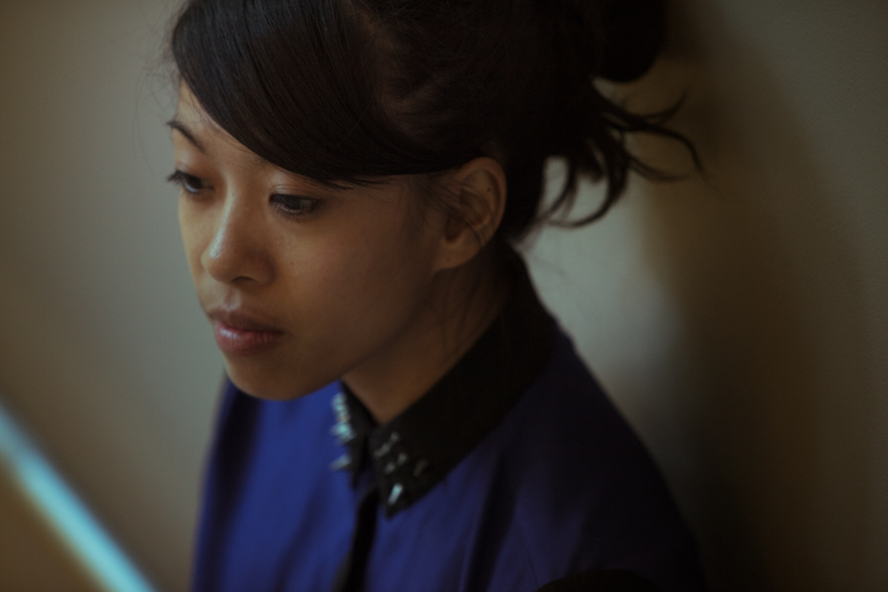

kate terrado
designer / educator
Kate Terrado graduated from Northeastern University with a BFA in Graphic Design. She joined Small Design Firm in 2011 after working as a visual and interaction designer in Berlin, Germany. Her interests include typography, making stuff, learning things, and riding bicycles.